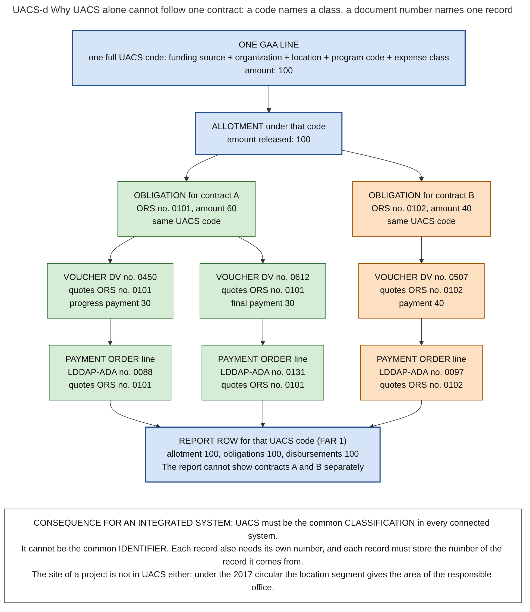

Diagram UACS-d · Mermaid flowchart
Why UACS alone cannot follow one contract: a code names a class, a document number names one record
Question: Is UACS the key that connects all PFM records? For which questions is it enough, and for which is it not?

What the diagram shows
- Question: is UACS the key that connects all PFM records? For which questions is it enough, and for which is it not?
- Idea: a UACS code names a group of records: all records with the same funding source, office, area, purpose and object. It does not name one record inside the group. Two contracts paid from the same budget line have exactly the same UACS code on every record. To separate them you need the numbers of the documents.
- Example (invented, for illustration only): one budget line funds two contracts. Every box in the same colour has the same UACS code. The records of contract A and of contract B differ only in their document numbers.
- A question that UACS answers: how much was allotted, obligated and paid under this program, by this office, for this expense class, in this year? All records with the same code are summed. This is what report FAR 1 does.
- A question that UACS does not answer: which payments belong to contract B, and was the work of contract B accepted before each payment? The code is the same for A and B. The answer needs the chain ORS number, voucher number, payment order number, and the contract number, which is not a coded field on the obligation request.
- Sources: UACS is a classification with segments for funding source, organization, location, program and object [JC2017-1]. The location code is the area of mandate of the operating unit, not the site of a project [JC2017-1 s.5.2]. Fields of the obligation request and of the payment order [GAM-V2 App.11, App.42]. NCA number on payment orders that agencies published [LDDAP-FORM]. FAR 1 by program and by object [JC2019-1]. Record links stored by the system in BTMS [BTMS-SITE].
Code

---
title: "UACS-d Why UACS alone cannot follow one contract: a code names a class, a document number names one record"
config:
flowchart:
wrappingWidth: 900
---
flowchart TB
%% QUESTION THIS DIAGRAM ANSWERS: is UACS the key that connects all PFM records? For which questions is it enough, and for which is it not?
%% IDEA: a UACS code names a group of records: all records with the same funding source, office, area, purpose and object. It does not name one record inside the group. Two contracts paid from the same budget line have exactly the same UACS code on every record. To separate them you need the numbers of the documents.
%% EXAMPLE (invented, for illustration only): one budget line funds two contracts. Every box in the same colour has the same UACS code. The records of contract A and of contract B differ only in their document numbers.
%% A QUESTION THAT UACS ANSWERS: how much was allotted, obligated and paid under this program, by this office, for this expense class, in this year? All records with the same code are summed. This is what report FAR 1 does.
%% A QUESTION THAT UACS DOES NOT ANSWER: which payments belong to contract B, and was the work of contract B accepted before each payment? The code is the same for A and B. The answer needs the chain ORS number, voucher number, payment order number, and the contract number, which is not a coded field on the obligation request.
%% SOURCES: UACS is a classification with segments for funding source, organization, location, program and object [JC2017-1]. The location code is the area of mandate of the operating unit, not the site of a project [JC2017-1 s.5.2]. Fields of the obligation request and of the payment order [GAM-V2 App.11, App.42]. NCA number on payment orders that agencies published [LDDAP-FORM]. FAR 1 by program and by object [JC2019-1]. Record links stored by the system in BTMS [BTMS-SITE].
L["ONE GAA LINE<br/>one full UACS code: funding source + organization + location + program code + expense class<br/>amount: 100"]:::code
L --> AL["ALLOTMENT under that code<br/>amount released: 100"]:::code
AL --> O1["OBLIGATION for contract A<br/>ORS no. 0101, amount 60<br/>same UACS code"]:::a
AL --> O2["OBLIGATION for contract B<br/>ORS no. 0102, amount 40<br/>same UACS code"]:::b
O1 --> V1["VOUCHER DV no. 0450<br/>quotes ORS no. 0101<br/>progress payment 30"]:::a
O1 --> V2["VOUCHER DV no. 0612<br/>quotes ORS no. 0101<br/>final payment 30"]:::a
O2 --> V3["VOUCHER DV no. 0507<br/>quotes ORS no. 0102<br/>payment 40"]:::b
V1 --> P1["PAYMENT ORDER line<br/>LDDAP-ADA no. 0088<br/>quotes ORS no. 0101"]:::a
V2 --> P2["PAYMENT ORDER line<br/>LDDAP-ADA no. 0131<br/>quotes ORS no. 0101"]:::a
V3 --> P3["PAYMENT ORDER line<br/>LDDAP-ADA no. 0097<br/>quotes ORS no. 0102"]:::b
P1 --> R["REPORT ROW for that UACS code (FAR 1)<br/>allotment 100, obligations 100, disbursements 100<br/>The report cannot show contracts A and B separately"]:::code
P2 --> R
P3 --> R
K["CONSEQUENCE FOR AN INTEGRATED SYSTEM: UACS must be the common CLASSIFICATION in every connected system.<br/>It cannot be the common IDENTIFIER. Each record also needs its own number, and each record must store the number of the record it comes from.<br/>The site of a project is not in UACS either: under the 2017 circular the location segment gives the area of the responsible office."]
R ~~~ K
classDef default fill:#ffffff,stroke:#444444,color:#111
classDef code fill:#d6e4f7,stroke:#1f4e8c,color:#111,stroke-width:2px
classDef a fill:#d5ecd5,stroke:#2e6b2e,color:#111
classDef b fill:#fde0c2,stroke:#a35200,color:#111